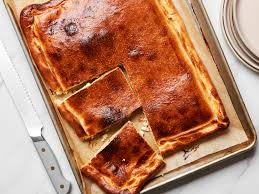
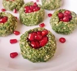
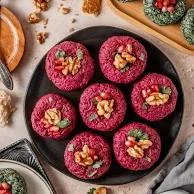

most popular dishes
most popular dishes in georgian cuisine is:
khinkali
Khinkali is one of the most popular Georgian dishes.
Dispute on its original roots will take us too far, but the fact is that Khinkali is an integral part of our mountain culture.
It is assumed to be coming from Pshavi and has later spread throughout the whole Georgia.
Khinkali dough has to be hard, yeast-less and flexible. Made out of wholegrain wheat flour the dough gets a special taste. Second major ingredient of Khinkali is meat. Traditionally mountainous people use mutton, but after spreading the recipe in the lowlands pork and beef substituted the mutton. In Mountains people chop the meat very thinly, but now, it’s mostly been processed in the chopper. Mountain Khinkali is less juicy then the lowland version, but it’s still very delicious and fragrant thanks to the manually chopped fresh meat and the thyme-seasoned filling. Lowland cooks substitute thyme with cumin.
there are 3 types of khinkali
- chalachuri (city style)
- meat
- potato
khachapuri
Khachapuri is a traditional Georgian dish of cheese-filled bread.
The bread is leavened and allowed to rise, molded into various shapes, and then filled in the center
with a mixture of cheese (fresh or aged, most commonly, specialized khachapuri cheese), eggs, and other ingredients.

there are a lot of varieties of khachapuri:
- adjaruli
- imeruli
- kubdari
- xabidzgina
- chakrahina
lobiani
lobiani is a traditional Georgian dish of bean-filled bread. In Georgia the most popular is Rachuli lobiani (რაჭული ლობიანი), like a Khachapuri, but with beans.
The word Lobiani comes from the Georgian word for beans, which is ლობიო (Lobio). This Lobio, or the kidney beans, is the most important ingredient for making lobiani.
The dough for lobiani is made using matsoni, it is prepared in the same way as Imeretian khachapuri, but requires more kneading. Pre-boiled beans are used for the filling.[3]
mtswadi
mtswadi is traditional Georgian barbeque, very juicy and delicious.
Georgias Kakheti region is especially famous for preparing most delicious barbeque in whole country. Georgian barbeque can be made from pork and veal as well, yet pork mtswadi is more popular.
If you prepare mtswadi with this kind of marinade, you will end up eating most tender and juicy barbeque ever.
chackapuli
chackapuli is a Georgian stew. It is considered to be one of the most popular dishes in Georgia.
It is made from lamb chops or veal, onions, tarragon leaves, cherry plums or tkemali (cherry plum sauce) , dry white wine, mixed fresh herbs (parsley, mint, dill, coriander), garlic, and salt. Chakapuli can also be made with beef or mushrooms instead of lamb.[6]
.webp)
pkhali
Pkhali is a traditional Georgian dish of chopped and minced vegetables, made of cabbage, eggplant, spinach, beans, beets and combined with ground walnuts, vinegar, onions, garlic, and herbs. Pkhali is also called mkhali.[6] The common ingredient of all variations of pkhali is puréed walnut sauce. In Georgian restaurants, pkhali is usually served in three types: spinach, beetroot and white beans.
 